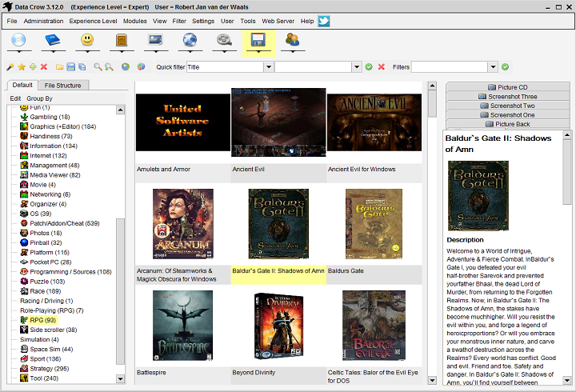

-

Images - Card View
- 
Software - Card View
-

Software - Table View
Data Crow is the ultimate media cataloger and media organiser.
Always wanted to manage all your collections in one product? You want a product you can customize to your needs?
Your search ends here! Using Data Crow allows you to create a huge database containing all your collectables.
You can use the excellent online services to retrieve the information instead of typing all the information yourself.
Data Crow has a modular setup allowing it to be extended with user created collection modules.
Data Crow is 100% free and 100% free of ads, viruses and spyware.
Data Crow runs on any system where Java 1.6 (or higher) from Oracle is installed.
Standard Collection Modules

Catalogue Software, Movies, Music, Images and Books. These modules, as we call them, are standardly supplied.
Create New Collection Modules
Create your own collection modules, straight from within the software. Export your modules to share them with your friends. You can even modify the existing modules.
Loan Administration

With the Loan Administration you can track who has borrowed your items and when they should return them.
Online Services
Typing? That is so 2000! Find the information on Software, Movies, Books and Music with one of the standard Online Services (such as Imdb.com, Bol.com, Amazon.com and more).
Reporting

Data Crow offers various reports. For the reporting the power of XSLT is used together with the Java technology to create HTML and PDF reports.
File Information Import

Import information from AVI, DIVX, XVID, MP3, MP4, OGG, JPG, PNG and many other formats.
About Us
Data Crow has been developed by me, Robert Jan van der Waals. I started this project for my own collections. In the years that followed I have made it available to the public and expanded the functionality significantly while still delivering the software for free. The project is hosted, at no cost, by Sourceforge.net.
The benefit for me to have this project hosted on Sourceforge.net is that it will allow the users, yes you, to
make feature requests, visit the forums, report bugs and download new releases.
F.A.Q.
The setup has to be run "as administrator" in this case. Right-click the setup file and select "Run as Administrator".
This is not due to Data Crow but depends on the Font settings. The selected font needs to be able to represent the symbols and characters. The "Arial Unicode MS" for Windows environments is for example perfect for displaying any kind of characters (supports Unicode and thus Chinese, Japanese, Arabic and other languages).
Change the Font settings from within the Settings menu: Settings > Settings > Fonts.Data Crow comes in two flavours, 32 bit and 64 bit. Which one to start? It depends solely on the version of Java installed (and set as default) on your machine. If you have a 64bit Windows version but a 32bit version of Java installed you can only start Data Crow using the Data Crow 32bit shortcut / executable.
That's not a question.. Anyway, check the forum. If you really are experiencing a bug, please register it at Sourceforge.net (it's the place where Data Crow is resides).
Windows - Data Crow won't install to C:\Program Files\ folder
Chinese or other characters not displayed correctly
Which version of Data Crow to launch?
I wasn't helped by above topics
Downloads


Donations - Status
Data Crow is 100 per cent free. I rely on donations to cover my costs, such as hosting fees, tools, books, licenses and hardware.
Additionally I use it for fun stuff which is not necessarily Data Crow related ツ. This project is not donation driven,
meaning I will still release new versions regardless of the donations made (maybe slightly less motivated in case of zero donations).
The status is based on donations made this month. Below you find an overview of the donations made, this month and in the past 3 months:
Status
- September
- October
- November
- December
- € 85,00
- € 46,00
- € 203,00
- € 25,00
A big thanks to all contributors! The total for 2013 so far is: € 906,50.
Last updated on December 24, 2013.
I hope you enjoy using Data Crow. In case you want to make a donation you can use one of the buttons below. Donations can be made
via Paypal. In case you want your donation to be visible to the public I suggest you use the Sourceforge.net donation method.
|
|


{kind=link}
{kind=link}
{kind=link}
{kind=link}
{kind=link}
{kind=link}
{kind=link}
Latest News
One month (well, ok, almost two months) has past and I thought it would be about time for an update on the upcoming 4.0 version. I have recently shifted priorities in the development (what!?) and have decided to give priority to the development of a full server client architecture. I have been updating the code and separating it into three parts; datacrow-core, datacrow-client and datacrow-server. (This is where it gets a bit more nerd-ish) The new core and server library have no dependency towards the GUI. There will be no more code mixture (bad practice) between GUI and "infrastrure" code. A headless server (this actually has been requested over and over and over again) will therefore be fully possible. Better yet, that is precisely what I am working on.
I know that not all of you (okay, most of you) will not be interested per se in running a client-server program at home. No fear, running just on one machine will be fully supported (as it always has been).
So will you benefit? Yes. Why? Because it will allow for more extravagant feature development such as a media streaming server, running it in the cloud (to throw in one buzz word) and having one single point of access for you and your partner / kid / friend.
What else? This will neatly tie in with the new web development and the Android App development in the near future (the deadline is now pushed back to summer, 2014). Maybe I will run a server myself, somewhere in the cloud, to allow for a central repository. Anyway, that's not on the road map, so I'll stop right there.
Server-client mode; what will it do? You will be able to run a server (it will not be a complicated thing to do, promise) and connect with as many clients as needed to this server. Technically the server will be the host for the application settings (not all of them, only settings such as the field and other data related settings). Also it will be the owner of the data, the modules and the reports. If a client has administrative rights he or she can decide to change the settings and push these to the clients. Same goes for module and report changes.
What else will be in version 4.0? The following still applies:- Parts for items are introduced allowing a book item for example to contain multiple articles, a movie items multiple files / episodes and a software item to consist out of multiple files. - The above allows all items to have an unlimited number of files. - Unlimited number of images per item. - Documentation update; module create guide, reporting guide, developer guide.
I am doing all of these changes at once as I have been withholding these for too long. The Data Crow platform is a solid one, but, it could do with a bit of a makeover. Solid, as I have noticed that many parts of the code are actually well suited for server-client development.
The weakspot will still be the web application. Development of which will start right after the 4.0 version. Long term (>1 year) I am looking to replace the current GUI with a solid web application. All of this will run on the, currently in development, new architecture.
Schedule: end of March 2014 the production version has to be live. Beginning of March I will have a beta version available for testing purposes. Confident I can make this date as the server code and the restructuring is well under its way.
Merry Christmas! -RobertData Crow, the ultimate cataloguer, needs one more major overhaul before I can confidently wrap up the App development. So here it is, the announcement of Data Crow version 4.0!
Major changes:
- Parts for items are introduced allowing a book item for example to contain multiple articles, a movie items multiple files / episodes and a software item to consist out of multiple files. - The above allows all items have an unlimited number of files. - Unlimited number of images per item. - Documentation update; module create guide, reporting guide, developer guide.
All of the above will make the Data Crow framework much more flexible and will accommodate for some of the most requested for features (of all time). This is going to be awesome! :)I just can't stand it when you think you have squashed a bug and all of the sudden... it's back! For now and ever I have fixed the issue where ratings are not shown correctly in the Quick View. Fixed some other minor bugs. No new functionality.
Read the changelog for more information (text file, opens in a new window).
Still working on the Android App.. "Screenshots?" - "No, not yet."imdbapi.com was down today (hopefully temporarily) and I have decided to quickly switch to omdbapi.com. Little loss of information (aspect ratio and other technical details) but at least it is working now. Mobygames.com decided to change their layout; the online service has now been fully rewritten. It's also a bit quicker then the older version, so all is well. Other fixes are mainly in the area of module creation and item import.
Small issues have been fixed by this release. Thanks to Bill's Bargain Basement Books for helping with testing.
Bugs! Ahhh! Okay... nothing major but they needed to be squashed regardless. Enjoy!
I had time today and won't have time in the upcoming days (note to burglars: no I am not going on a holiday, you are too late!). Although you have to be crazy to be developing on a (too) hot summer day I actual did just that and managed to fix a problem I wanted to fix for a long, long time. What is it? read the change log just this one time and you'll know. I squeezed in a couple of changes here and there as well. You won't see another release soon (unless critical bugs start to pop up) so enjoy!
Poor version 3.11. It only took a couple of days and then it got replaced by version 3.12. This really is for the most part a cosmetic edition. I have changed the layout a bit further. This is also a preparation for the web GUI since I want to keep the layout for both the same, for as far as possible. Due to the list of changes made and the addition of new functionality I have decided to release this as a normal version instead of a minor version. I wanted to add a bit more but was ill for a couple of days, shame!
Bugs? Just a couple. Imdb.com was not functioning due some site changes. Additionally I wanted to introduce fixes for launching files as well as to introduce some new features in that area. Not much else!
A whole new version! Medium in size and packed with changes and new functionality. TheMovieDB online search has been added, tags can be added to items and loans can be exported to an iCalendar file.
Pfew... after a long holiday and then some I have finally managed to squeeze out a (quick) fix version. I have been using Jar2Exe to generate new executables for 64BIT platforms to fix the Java detection issue. That's not the only fix (see the change log below).
For the next version I will focus on the web version... work on the Android App also continues.Important bug fixes for the online search functionality and the mass update functionality.
I have been notified that Data Crow will be project of the week, next week. This means Data Crow will be listed on the frontpage of Sourgeforge.net. Great!
This release mainly focuses on the help file, which has been greatly improved. During the writing of the help file the discovered issues have been fixed. Small improvements to the GUI have been made to improve the experience in using Data Crow. This is the first release since a long time having a completely up to date help. Note that the help is still only available in English; translators are, very, welcome to help out...
Special thanks to mrpenguin007 for the updated German translation! Find his module development page here.Went through the product and saw areas needing some attention. This release contains small changes as well as bug fixes. The fixes are for the module import and export processes. The changes are costmetic for the most part. When starting the new version you most likely will get a message saying there are new resources / language files available. This is because Data Crow now checks whether the installation folder holds newer files then the user folder. You can choose to leave everything as is or to update the user folder with the new files.
A small release to fix issues as reported to me by email. One is a problem in the loan administration panel where the title of the item is not displayed. The second issue is another upgrade issue from old versions. Additionally I discovered performance issues with the table view. Then I took another look at the new module bar and thought it could do with a small adjustment.. so here we are, looking at another release package to download and install. I'll try and not release anything for the next couple of days, promise ;-).
One more release! I have had some doubts about the version number for this one as I have changed the UI quite a bit. It's a first step to simplify the GUI (so I have kept it as a minor release for now). Let me know if you like it (or not!) on the forums. Of course there are bug fixes as well.
I have added some more information in the donation section. It now shows an overview of donations made in the past 4 months. Would it be a good idea to mention persons here as well? Let me know what you think. Oh and, also, I have fixed the contact form as listed at the bottom of this site.
A wee bit earlier than I expected... Data Crow version 3.9.23 has seen the light. I had some time to spend today and worked through some of the outstanding issues and smaller improvements I wanted make. You can safely upgrade from version 3.9.22 or the older versions. Enjoy!
Quite an important bug fix release. I have added fixes for the upgrade and am really hoping to have solved all the issues now. It will check on startup if anything has gone wrong.. Let me know if you are still having issues (or also if you are not :). Other smaller fixes have been added as well.
I apologize for not having been too actively working on Data Crow. A new job and vacations have caused some disruptions and this will continue for the next couple of weeks. Releases for fixes will still arrive but other work is currently on hold.This release contains a fixes for the upgrade process as well as some other minor fixes. See the changelog for more information.
Currently I am stabilizing Data Crow. You have seen numerous small versions being released over the past few days. This was all due to the two changes that were made; one was the upgrade of the database (engine) to the latest version which was not easy and two was to use a separate data folder (user folder). The latter caused lots of small problems but I am sure I have fixed the most of them. The best thing is that it allows you to share your data crow data with other installations on the network. The second best thing is that I no longer have to write data into the installation folder which was becoming more and more of an issue on the Windows platforms (Microsoft actively denies changing files in the "C:\program files" folders).
I am also busy with my secret side project; Data Crow on Android platforms. I hope I will have some more concrete news in the upcoming weeks. It is not part of the normal Data Crow project but it will allow you to run your modules and see your data on your Android phone or tablet. The initial version will be very basic (and cheap). It's going to be interesting!
It does explain this better looking website a bit as well, doesn't it? :)This release contains a fix for the backup and restore process.
This release contains fixes for issues caused by the upgrade of the database engine. Also issues have been fixed for users upgrading from version 3.8.16 and older. This release also delivers smaller changes.
After years.. I have decided to change this website completely. It's simpler, has less text and more fancy stuff. I quite like it and hope you do to!
Pfew, the changes I made took quite a number of releases. I hope to have it under control now. The backup and restore now works correct again. The issue with the upgrade of the database not working is mainly a security issue on the various platforms. The only solution is, when prompted, to run the command as stated in the message box from the command line / command prompt / terminal.
Added a parameter (-userdir:) to indicate the user directory to use. This allows you to run multiple instances of Data Crow looking at different user folders. Additionally I have added small fixes for potential problems while defining a user folder within the current Data Crow installation folder.
Linux fix for upgrades and a new feature. You can now select a user folder where all data is stored. This helps in avoiding the Windows problem of protected folders in the C:\Program Files\ folders as well as protected folders on other systems. On startup you will be asked to select the user folder. After selecting the folder Data Crow will migrate your data to this folder and will use this folder from then on. Please see the changelog for the details!
24 December 2013 - Data Crow 4.0 Development Update
1 November 2013 - Data Crow 4.0 Announcement
9 October 2013 - Data Crow 3.12.5
6 October 2013 - Data Crow 3.12.4
7 September 2013 - Data Crow 3.12.3
15 August 2013 - Data Crow 3.12.2
4 August 2013 - Data Crow 3.12.1
3 August 2013 - Data Crow 3.12
30 July 2013 - Data Crow 3.11.1
22 July 2013 - Data Crow 3.11
2 July 2013 - Data Crow 3.10.2
23 May 2013 - Data Crow 3.10.1
18 May 2013 - Next week's project of the week project on Sourceforge.net: Data Crow
18 May 2013 - Data Crow 3.10
12 May 2013 - Data Crow 3.9.26 has been released
10 May 2013 - Data Crow 3.9.25 has been released
9 May 2013 - Data Crow 3.9.24 has been released
30 April 2013 - Website updated
30 April 2013 - Data Crow 3.9.23 has been released
29 April 2013 - Data Crow 3.9.22 has been released
10 February 2013 - Data Crow 3.9.21 has been released
4 February 2013 - Development news
2 February 2013 - A new version: Data Crow 3.9.20
25 January 2013 - A new version: Data Crow 3.9.19
21 January 2013 - New website has been released
18 January 2013 - Data Crow 3.9.18 has been released
12 January 2013 - Data Crow 3.9.17 has been released
11 January 2013 - Data Crow 3.9.16 has been released
Links
Data Crow Forum
Data Crow Communities
Data Crow's Favorites
Contact Information
Data Crow's project page is hosted on Sourgeforge.net. Register at Sourceforge.net and you'll be able to log bug reports and change requests. This helps me in improving Data Crow of which you will benefit as well. You'll get automatic updates on tickets you created by email.
For more updates follow Data Crow on Twitter: http://twitter.com/data_crow
Forums are hosted on Sourceforge.net where you can post your questions or discuss any Data Crow related topic. Of course email is always an option too. Send me an email at info@datacrow.net.